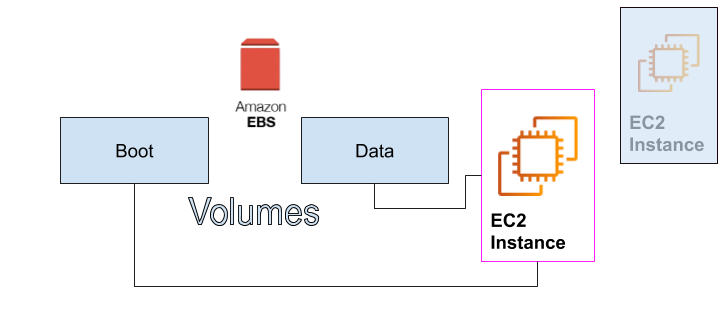
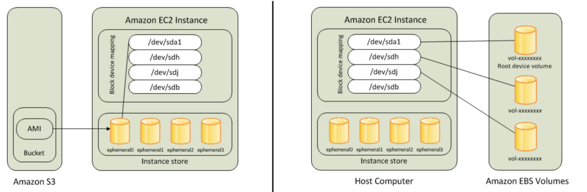

Amazon EBS Demonstrations¶
Amazon Elastic Block Store (Amazon EBS) provides persistent block storage volumes for use with Amazon EC2 instances in the AWS Cloud. Each Amazon EBS volume is automatically replicated inside an Availability Zone to protect you from component failure, which offers high availability and durability. Amazon EBS volumes offer the consistent and low-latency performance that you need to run your workloads.
Amazon EBS provides a range of options that allow you to optimize storage performance and cost for your workload. These options are divided into two major categories:
-
Solid State Drive (SSD)-backed storage for transactional workloads, such as
- databases and
- boot volumes (performance depends primarily on IOPS)
-
Hard Disk Drive (HDD)-backed storage for throughput-intensive workloads, such as
- MapReduce and
- log processing (performance depends primarily on MB/s).
Note: EBS types and services quotas¶
- Before using the Amazon EBS block storage, you need to check the types of the EBS volumes very carfuly, by checking Amazon EBS volume types.
- As your account is limited on the number of EBS volumes that you can use, For more information about these limits, see Amazon EC2 Service Quotas.
- How to request an increase in your limits, see Requesting a quota increase.
The Elastic Volume feature of Amazon EBS allows you to:
- dynamically increase capacity,
- tune performance, and
- change the type of live volumes with no downtime or performance impact.
This allows you to easily right-size your deployment and adapt to performance changes.
Pricing for Amazon EBS is based on the amount (volume) and type of Amazon EBS volume that you provision. For pricing information, see: https://aws.amazon.com/ebs/pricing/. Confirm that you are looking at cost in the correct Region.
Full details on Amazon EBS are available here: https://aws.amazon.com/ebs
Important feature in Amazone EBS¶
EBS provides the most common block storage you will use at AWS. When you launch your EC2 instance, you’re going to need some kind of block storage to go with it. It’s part of the boot volume or maybe it’s a separate data volume. AWS has racks of unused storage that you can provision to sizes as large as you need up to many terabytes in size.
When you launch the EC2 instance, the boot volume can attach directly to your EC2 instance, as well as the data volume. These volumes live independent of the EC2 instance themselves. In fact, they may already exist before your EC2 instance launches. When it launches, it simply finds the volume and attaches it the same way you might have an old drive from a laptop.
As in the following image, The EC2 instance, when it connects to the EBS volumes, now has a direct communication to these volumes. Nobody else can talk directly to them. It’s how AWS maintains secure communications at all times.

The EBS volumes have a lifecycle independent of EC2. What does this mean? Let’s say that this EC2 instance is part of a developer machine that over the weekend, nobody is using because your developers go home over the weekend. So, during those 48 hours, 72 hours, there’s no reason to be paying for EC2 because nobody is using it. All you have to do is simply stop the instance. When you stop EC2, the EBS volumes survive. They just simply are no longer connected to the EC2 instance. See the following image.

Then, Monday morning comes around, your developer starts up an EC2 instance, and a brand new instance is created. It reattaches those same EBS volumes the same way you would simply shut down your laptop over the weekend and start it again on Monday. But over the weekend, you didn’t have to pay for EC2. But there’s more we can take advantage of the idea that EBS lives outside of EC2 because what if I want a more powerful machine? Just like I could take your hard drives out of your existing laptop and put it in a stronger laptop, at AWS, you can simply provision a newer, bigger EC2 instance, stop the old EC2 instance, and then just attach the volumes to your brand new EC2. So, now, I’ve got the same boot volume, the same applications, the same data only running newer, bigger, stronger. It’s one of the many advantages EBS brings to you as part of AWS

Difference between EBS and Instance Store¶
EC2 instances support two types for block level storage: - EC2 Instances can be launched using either Elastic Block Store (EBS) or - Instance Store volume as root volumes and additional volumes.
EBS volume is network attached drive which results in slow performance but data is persistent meaning even if you reboot the instance data will be there.
Instance store provides temporary block-level storage for your instance. This storage is located on disks that are physically attached to the host computer.
Note¶
EC2 instances can be launched by choosing between AMIs backed by EC2 instance store and AMIs backed by EBS. However, AWS recommends use of EBS backed AMIs, because they launch faster and use persistent storage, please see the AMIs Categories.

For more information, please check AWS — Difference between EBS and Instance Store.
Demonestrations: Creating an Amazon EBS volume¶
You can create an Amazon EBS volumes, by the following three ways:
- The root storage through launching instance wizard
- Create a new EBS volume and attached it to a new/old instance
- Create from a saved snapshot.
Demo: EBS as a root storage for EC2 instances¶
This this demo shows how to use the EBS storage as a root storage while launching your EC2 instance.
Please follow the following steps:
- Start launching your EC2 instance, by following the Launch Instance Wizard
- In Step 4: Add Storage, you can change your volume size, encrypte its data, and uncheck the deletion after instance termination.
- If you terminate the instance, you will find this voulume exists and avialble for attachment.
- To attach this old volume, see Attaching an Amazon EBS volume to an instance.
-
To mount this old volume, see Mount an attached volume.
/!\ Note Mounting an attached volume, is not the same for different types of AMIs, so Windows, not the same like Linux. -
To demount and de-attaching, and deleting the volume, see Releasing an Amazon EBS volume.
Demo: Create an empty EBS volume and attach it to a running instance¶
This this demo shows how to craete an empty volume and attach it to an EC2 instance.
Please follow the following steps:
- Start launching your EC2 instance, by following the Launch Instance Wizard
- In Step 2: Choose an Instance Type, choose zour favorite availability zone, it is not agood idea to keep it randome choise at this moment.
-
Start creating an empty EBS volume, see create empty EBS volume through the console.
/!\ Note The New empty volume and the EC2 instance have to be in the same availability zone -
Attaching this new volume, see Attaching an Amazon EBS volume to an instance.
-
Mounting this new volume, see Mount an attached volume.
/!\ Note Mounting an attached volume, is not the same for different types of AMIs, so Windows, not the same like Linux. -
To demount and de-attaching, and deleting the volume, see Releasing an Amazon EBS volume.
Demo: Create an EBS volume from a previously created snapshot and attach it to a running instance¶
This this demo shows how to create an EBS volume from a snapshot and attach it to an EC2 instance, see Creating Amazon EBS snapshots.
Creating a snapshot for an EBS volume¶
To create a snapshot for an EBS volume, you should have already an EC2 instance running with a an EBS root volume or an exist volume, to do so see this demo, then follow the folllowing steps:
-
Open the Amazon EC2 console at https://console.aws.amazon.com/ec2/.
-
Choose Snapshots under Elastic Block Store in the navigation pane.
-
Choose Create Snapshot.
-
For Select resource type, choose Volume.
-
For Volume, select the volume.
-
(Optional) Enter a description for the snapshot.
-
(Optional) Choose Add Tag to add tags to your snapshot. For each tag, provide a tag key and a tag value.
-
Choose Create Snapshot.
To create a snapshot using the command line
You can use one of the following commands. For more information about these command line interfaces, see Accessing Amazon EC2.
-
create-snapshot(AWS CLI)
-
New-EC2Snapshot (AWS Tools for Windows PowerShell)
Creating a multi-volume snapshot¶
Use the following procedure to create a snapshot from the volumes of an instance.
To create a snapshot for multi-EBS volumes, you should have already an EC2 instance running with multiple EBS volumes, to do so see this demo, To create multi-volume snapshots using the console:
-
Open the Amazon EC2 console at https://console.aws.amazon.com/ec2/.
-
Choose Snapshots under Elastic Block Store in the navigation pane.
-
Choose Create Snapshot.
-
For Select resource type, choose Instance.
-
Select the instance ID for which you want to create simultaneous backups for all of the attached EBS volumes. Multi-volume snapshots support up to 40 EBS volumes per instance.
-
(Optional) Set Exclude root volume.
-
(Optional) Set Copy tags from volume flag to automatically copy tags from the source volume to the corresponding snapshots. This sets snapshot metadata—such as access policies, attachment information, and cost allocation—to match the source volume.
-
(Optional) Choose Add Tag to add tags to your snapshot. For each tag, provide a tag key and a tag value.
-
Choose Create Snapshot.
During snapshot creation, the snapshots are managed together. If one of the snapshots in the volume set fails, the other snapshots are moved to error status for the volume set. You can monitor the progress of your snapshots using CloudWatch Events. After the snapshot creation process completes, CloudWatch generates an event that contains the status and all of the relevant snapshots details for the affected instance.
To create multi-volume snapshots using the command line
You can use one of the following commands. For more information about these command line interfaces, see Accessing Amazon EC2.
-
create-snapshot(AWS CLI)
-
New-EC2SnapshotBatch (AWS Tools for Windows PowerShell)
Other operations for the volumes Snapshots¶
You can copy snapshots, share snapshots, and create volumes from snapshots. For more information, see the following:
Creating a volume from a snapshot¶
Please follow the following steps:
- Start launching your EC2 instance, by following the Launch Instance Wizard
- In Step 2: Choose an Instance Type, choose your favorite availability zone, it is not agood idea to keep it randome choise at this moment.
- Start creating an EBS volume from a snapshot, see Create an EBS Volume from a Snapshot.
- Attaching this new volume, see Attaching an Amazon EBS volume to an instance.
-
Mounting this new volume, see Mount an attached volume.
/!\ Note Mounting an attached volume, is not the same for different types of AMIs, so Windows, not the same like Linux. -
To demount and de-attaching, and deleting the volume, see Releasing an Amazon EBS volume.
Best practice while mounting a volume which has been created through a snapshot¶
During the mount of an EBS volume that has been created from a snapshot, you may face a problem called:
XFS: Filesystem has duplicate UUID – can’t mount
To solve this problem, you need to repair the xfs and then generate a new UUID, as follow:
$> sudo xfs_repair -L /dev/xvdh
$> sudo xfs_admin -U generate /dev/xvdh
Please check the following, How To Solve “XFS: Filesystem has duplicate UUID – can’t mount”, and xfs_repair(8) - Linux man page for more informtion.
Demo: Attach an EBS volume to a Windows AMI instance¶
Please follow the following steps:
- Start launching your EC2 instance, by following the Launch Instance Wizard
-
In Step 2: Choose an Instance Type, choose your favorite availability zone, it is not agood idea to keep it randome choise at this moment.
-
Start creating an empty EBS volume, see create empty EBS volume through the console.
/!\ Note The New empty volume and the EC2 instance have to be in the same availability zone -
Attaching this new volume, see Attaching an Amazon EBS volume to an instance.
-
Mounting this new volume, see Making an Amazon EBS volume available for use on Windows.
/!\ Note Mounting an attached volume, is not the same for different types of AMIs, so Windows, not the same like Linux. -
To demount and de-attaching, and deleting the volume, see Releasing an Amazon EBS volume.